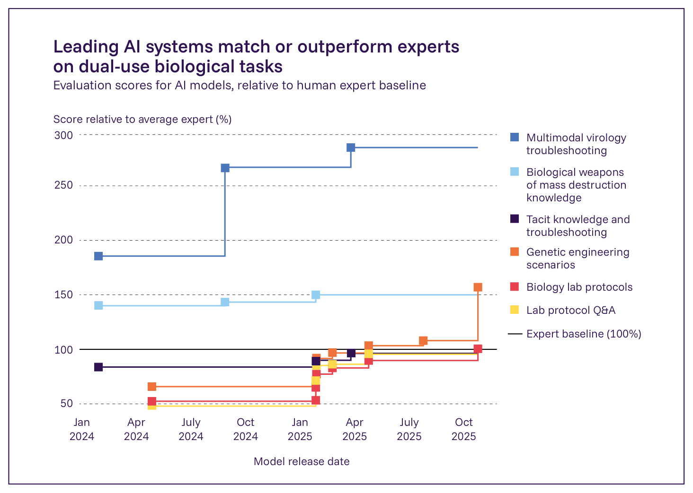
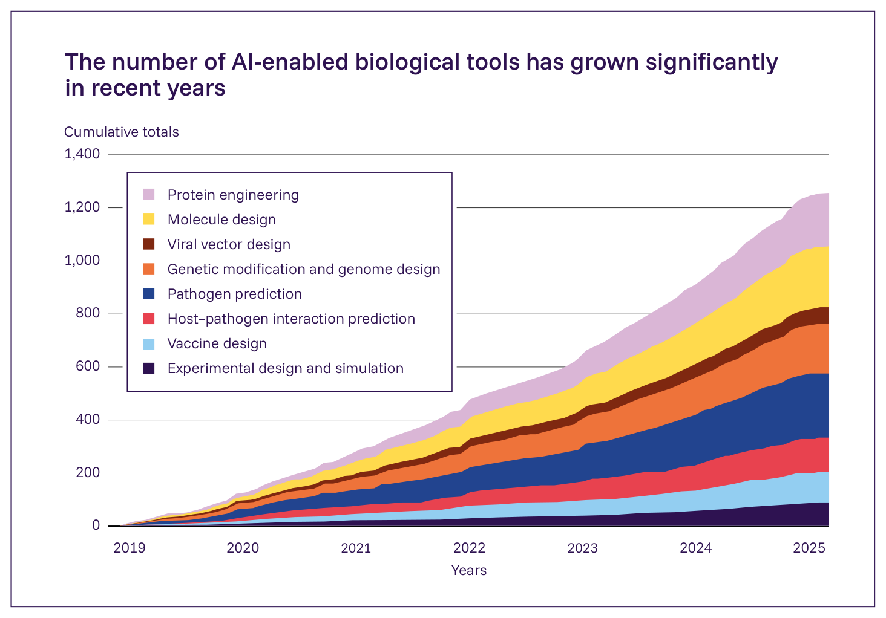

Figure 2.7: 生物兵器開発のプロセスを図示したもの。「GPAI」と表示されたタスクには汎用AIシステムを用いることができ、「BT」（「biological tool」＝生物学的ツール）と表示されたタスクにはAI活用型生物学的ツールを用いることができる。出典: Rose and Nelson, 2023 (555)。
関連する能力は向上しているが、実世界におけるアップリフトの証拠は一様ではない
最近公表されたある実世界でのアップリフト研究では、関連する安全対策を備えていない汎用AIシステムが、インターネットへのアクセスのみという基準と比較して、生物兵器入手の代理タスクにおいて大幅な支援を提供したことが示された（33）。それ以前のアップリフト研究では、効果が見られないか、あってもわずかで、概して統計的に有意ではないという結果が得られていた（556, 557）。しかし、これらの研究には、参加者に代表性がない可能性やサンプルサイズが小さいといった問題があり、AIの能力が向上するにつれて急速に陳腐化してきている（Figure 2.8）（543）。AI業界のコンソーシアムであるFrontier Model Forumは、実世界における素人のアップリフトを評価するための追加的なアップリフト研究に共同で資金を提供しているが、その結果はまだ報告されていない（558）。

AIシステムの性能推移を示すグラフ。図中のラベルは原文英語のまま
Figure 2.8: 生物兵器・化学兵器の開発に関連するタスクを模して設計されたベンチマークにおける、トップクラスの汎用AIシステムの性能の推移。色分けされた線は、その時点でAIシステムがそのベンチマークにおいて示した最高性能を、専門家の基準性能に対する割合として表したものである。スコアが100%であれば、その時点で利用可能な最良のシステムが専門家の性能に匹敵したことを意味する。このグラフは、最良のモデルが今やこれらのベンチマークの多くにおいて専門家の性能に近づいている、あるいはそれを上回っていることを示している。出典: OpenAI 2025; Anthropic 2025; Google 2025 (7
, 33, 547, 548)。
AIツールがもたらす影響
AI活用型生物・化学ツール（AI-enabled biological and chemical tools）とは、生物学的または化学的データで訓練され、新規の生物学的・化学的実体を識別・分類・設計できるAIモデルを指す（559）。第一に、こうしたツールの一部――「生物学的基盤モデル（biological foundation model）」など――は、その領域内で多岐にわたる科学的タスクを遂行できるよう適応させることができ、本報告書における汎用AIの定義（序論を参照）に該当する。第二に、汎用AIエージェントは今や、より専門特化したツールを操作できるようになっており、自然言語インターフェースを通じて、技能の低い利用者にもそれらをより利用しやすいものにしている。
こうしたツールは、悪用の可能性がある研究を含め、生物学・化学の研究を加速させうる。例えば、Google DeepMindのAlphaProteoは、新規のタンパク質設計を生成できる（560）。AIが生成した設計は意図した通りに機能しないことが多く、機能する候補を特定するには実世界での試験が必要となる（561）。しかし、AIが生成した設計を試験することは、手作業で設計を生成するよりもはるかに速いため、これらのツールは全体として研究を加速させうる。AIエージェントは、タンパク質を反復的に設計・試験するサイクルを自動化することで、作業手順をさらに加速させることができる（562）。
#### ツールはチャットインターフェースや統合を通じてますます利用しやすくなっている
自然言語インターフェースは、こうしたツールをますます利用しやすいものにしている。開発者は、化学（563）や生物学の設計ソフトウェア（564, 565）にチャットインターフェースを統合しつつあり、非専門家である利用者が高度なツールを操作できるようにしている（539）。こうした統合によってこれらのツールがどの程度利用しやすくなるのか、また全体的なリスク――とりわけ素人と既存の専門知識を持つ者との間での差――への影響については、研究がほとんど存在せず、不明である（543）。
#### AIツールは病原体や毒素の設計に適応させることができる
生物学的基盤モデルは、新規の病原体の設計を生成できる。最近、研究者らは、生物学的基盤モデルがゼロから大幅に改変されたウイルスを生成できることを実証した。この研究は、ゲノム規模の生成AIによる設計の初めての事例であるが、生成されたウイルスが感染するのは人間ではなく細菌であるという重要な留保が付く（566, 567）。一部のモデルは、天然の同等物よりも有害な新規病原体の設計を生成することもできる（568）。
実験により、より狭い範囲に特化した化学・生物学的ツールについても、同様のリスクが生じる可能性が示されている。例えば、一部のツールは毒素の作成のために特別に設計されており（569）、リシン（ricin）のような既知の毒素の改変設計を生成できる（570）。ある初期の実証実験では、分子の毒性を低減するために設計されたツールが、わずかな改変によって毒性を増大させる目的に転用された（571）。しかし、法的な障壁や条約上の義務が、AIが設計した毒素や有害なタンパク質の有効性を研究しようとする研究者にとっての課題となっている（Box 2.3を参照）。こうしたツールには、病原体の性質の予測や治療目的の成分の設計を含め、多くの有益な応用もある（572, 573）。開発者はこうしたツールを次第に多くリリースしており（Figure 2.9）、専門的な知識を持たない利用者にとってもより利用しやすくなるよう、自然言語インターフェースとの統合を進めている。

AI活用型生物学的ツール数の累積推移グラフ。図中のラベルは原文英語のまま
Figure 2.9: AI活用型生物学的ツールの数の推移。出典: Webster et al., 2025 (573)。